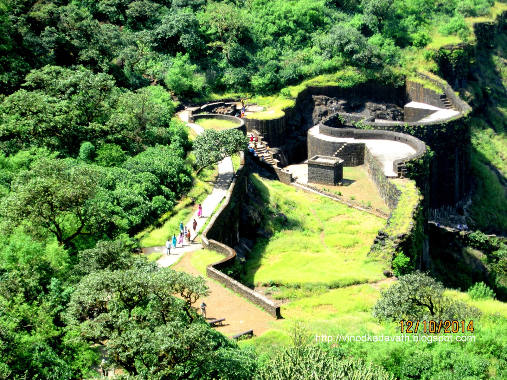

Location: Pune district of Maharashtra, India
Elevation: 2700ft above the sea level
Mountain range: Sahyadri Mountain Range
Best Time to Visit: Any time
Difficulty Level: Medium
The Raigad Fort is one of the major spots of tourism in Maharashtra. It is a hill fort that is based in the Raigad district of Maharashtra. Chhatrapati Shivaji has made this fort the capital of his empire in the year 1674.
It is located in the Shayadri mountain range. There is a long stretch of nearly 1450 steps that leads to the fort.
To visits the place a rope way has been made that helps the tourists to reach the top of the fort.
Raigad is well surrounded by mountains and was considered secured. Tourist an reach a top using ropeway or by doing trekking. Ropeway will take you to the top in just 5-6 minutes and it will take 2 hours to reach to a top by doing trek. So ropeway is really a good option for the senior citizens and physically challanged people. During monsoon, using ropeway will give you a wonerful feeling of moving through clouds and you can experience a very impressive natural beauty of the Raigad.
One can easily reach Mahad by ST buses. From there paid vehicles like jeep are available till base village of the fort – Pachad.
It is 132 km away from the Pune city.
Route From Pune:Pune – Kamshet – Khopoli – Sajgoan – Raigad.
Route From Mumbai:Mumbai – Panvel – Pen – Nagothane Fata – Indapur – Mangaon – Mahad – Pachad (Base village Raigad fort Maharashtra). Travelling by road instead train displays amazing scenic views. It is recommended to take the route via Mahad instead of Mangaon. The route via Mangaon is very bad and not much exciting. Though the route via Mahad is bit long but is goes through highway and gives nice views!
Please refer below blog where we have listed all the necessary things to carry while going for a sahyadri mountain range trek.
{kind=link}
{kind=link}
{kind=link}
{kind=link}
{kind=link}
{kind=link}
{kind=link}